EduBound
EduBound is a proposed design solution I developed as apart of a class project in CSE 440: Introduction to HCI. It serves to offer first generation high school students a semi-structured web based program that can help provide structure that can be invaluable to the college application process.
Problem Solution Overview
Because they are the first in their family to go to college, many first generation college students do not have access to college planning resources. Therefore, first generation college students are more likely than their continuing-generation peers to depart from postsecondary school after the first year and not return. Resources that first-generation students often rely on to understand the college admissions process include high school counselors, University-specific first-generation student programs, and other various academic advisors and mentors. The biggest issue here is that the quality of advice each student receives varies from school to school. While one student may have a supportive and helpful counselor or advisor, another student may have an advisor who is discouraging and unaccommodating. Additionally, many first-generation students discover in their first year of college that their high school courses did not prepare them for college-level courses, even if they were described as “advanced” or count as college credits. There are also various online articles and websites that can be helpful for first-generation college students, but they are often vague and lack a complete overview of big picture decisions, such as deciding whether or not to take the SAT or deciding which college to attend. Having one centralized, interactive resource for first-generation students could greatly improve the success of these students and help them feel more confident as they transition from high school to college. This is why we decided to design EduBound, a web application for high school students who will be the first generation in their family to attend college, to provide resources and guidance to students looking to further their education.
Design Research Goals, Stakeholders, and Participants
While our target user group is high school students planning to attend college, we decided to reach out to current first-generation college students for our user research. For our research plan, we used a survey with direct storytelling as an additional question. We decided to use this method because of the limited time we had to conduct our user research and because it is often difficult to find the time to set up meetings with other college students. We received 13 responses for our survey questions. 7 of the 13 participants who completed the survey also completed the direct storytelling question. All participants were first generation students currently attending the University of Washington. Based on where we did recruiting, our participants were a mixture of STEM, design, and economics majors.
User Research Results
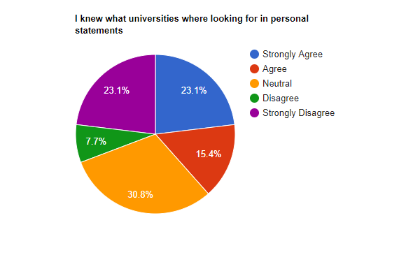
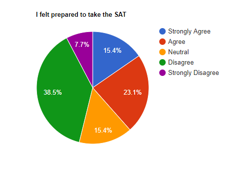
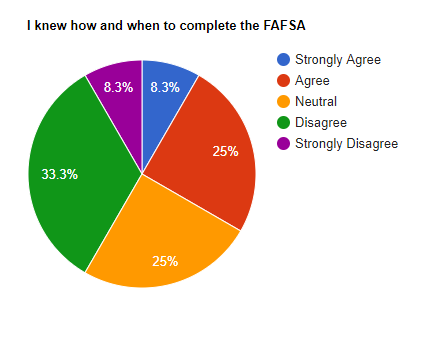
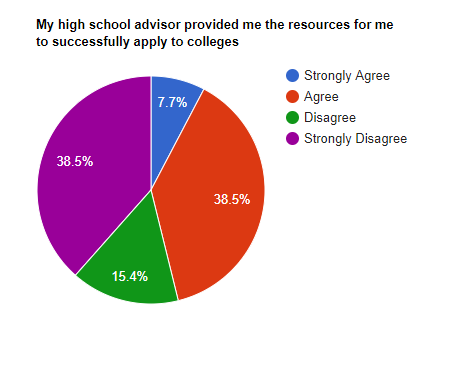
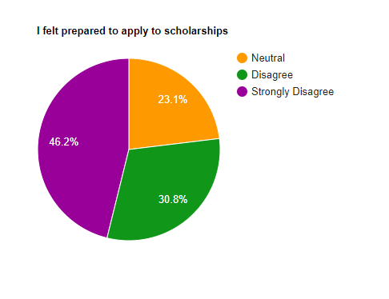
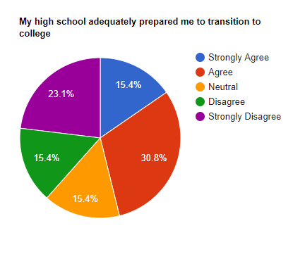
There are many themes we discovered across questions as a part of our user research. One of the first barriers that survey respondents faced was a lack of preparation from their high school courses. Many of these students took AP classes at their high school and felt their experience in these classes poorly prepared them for college. Students reported that these AP classes didn’t encourage the independent learning that is required to succeed in college, and poorly prepared for UW.
Mentoring figures are useful for these students because they provide resources as well presenting information for the general timeline of significant events for applying to college. However, some schools have a lack of quality college counselors or advisors, and students without parental support might find this an impediment when figuring out their plan for college.
Based on the direct-storytelling responses we got, impostor syndrome is incredibly common among first-generation students. Many of the students cited a lack of resources and support as the main cause of their feelings of impostor syndrome.
Storyboarding
The design we chose is a Web App Learning Portal for high school students who will be the first generation in their family to attend college. The two tasks we selected for our design are: Find Free College Prep Programs and Finding A Mentor.
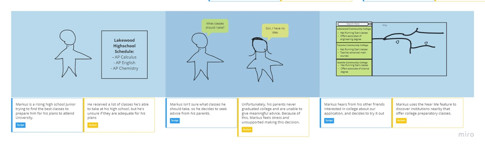
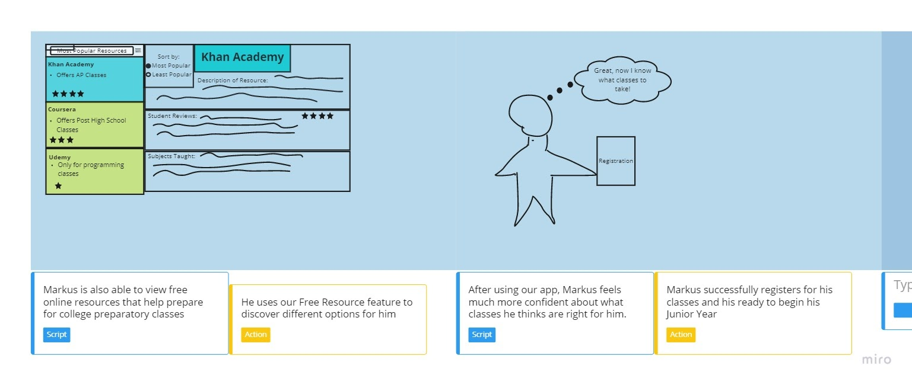
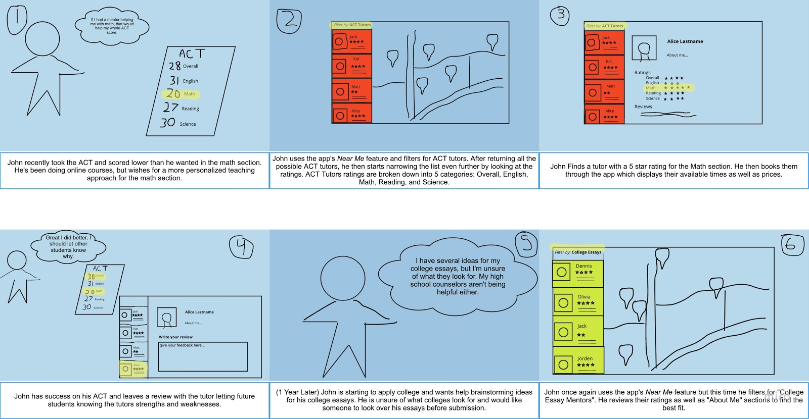
Paper Prototyping
Our group produced a paper prototype for our design mockup to allow usability testing of our low-fideltiy design.
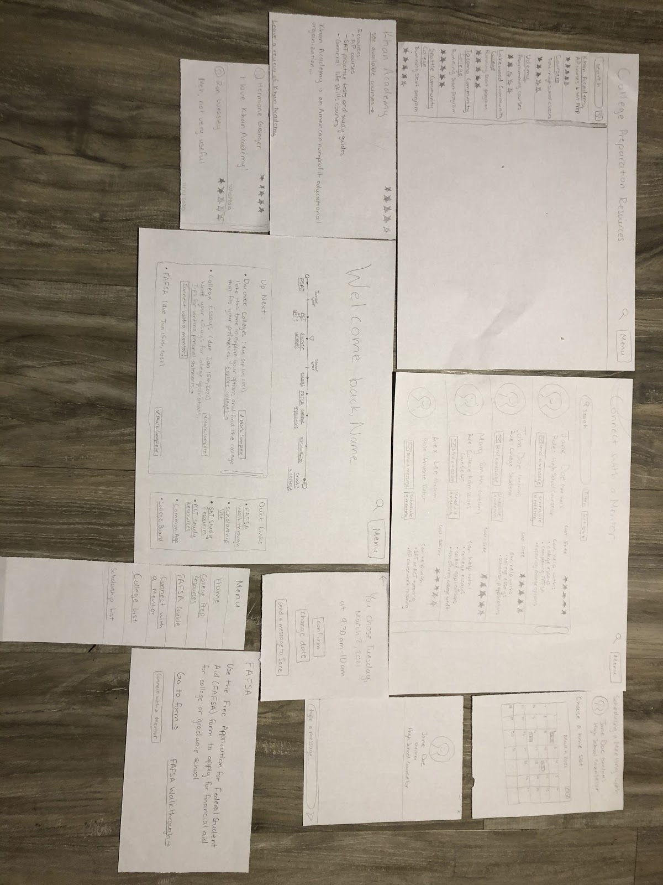
Digital Mockup
Our group finally produced a digital mockup of our design using Figma. Below is an overview of each specific part of our app.
Landing Page

Connect with a Mentor Overview
The “Connect with a mentor” page allows a user to find mentors, such as advisors, tutors, and consolers, anytime during the college application process. This page is a subtask of “find what's next in the college application process” and is meant to be used if a student feels the need for more specialized help than the timeline feature is able to give. From the page, users can schedule meetings and message various mentors.
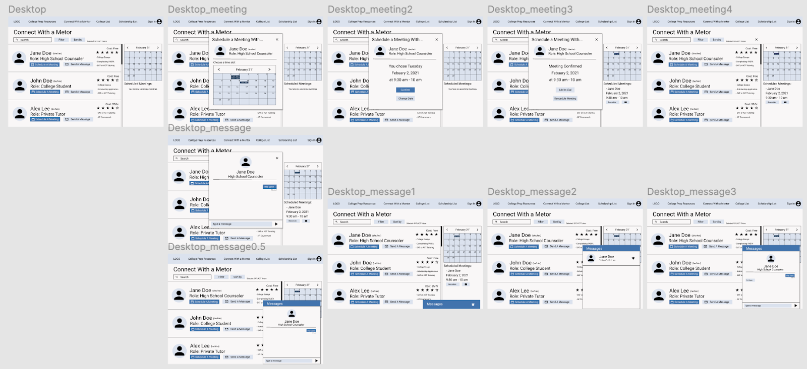
Find College Prep Resources Overview:
The “College Preparation Resources” page displays a list of resources related to preparing for college-level academics, as well as studying subjects that may not be available at a student’s high school. This page is directly related to the “Find College Preparation Resources” task.
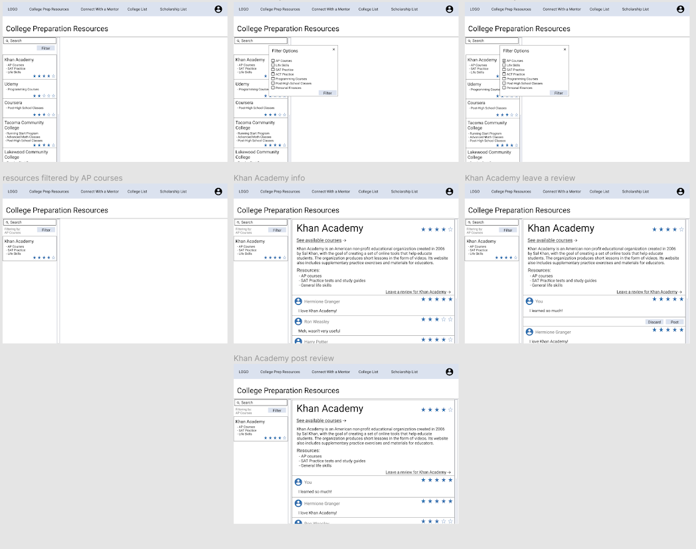